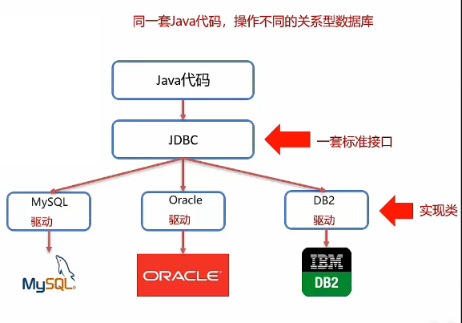

JDBC简介
- JDBC概念
- JDBC就是使用Java语言操作关系型数据库的一套API
- 全程（Java DataBase Connectivity）Java数据库连接
- JDBC本质
- 官方（sun公司）定义的一套操作所有关系型数据库的规则，即接口
- 各个数据库厂商去实现这套接口，提供数据库驱动jar包
- 我们可以使用这套接口(JDBC)编程，真正执行的代码是驱动jar包中的实现类
- JDBC好处
- 各数据库厂商使用相同的接口，Java代码不需要针对不同数据库进行开发
- 随时替换底层数据库，访问数据库的Java代码保持不变

步骤
```java
//1.注册驱动
Class.forName(“com.mysql.cj.jdbc.Driver”);1
2
3
4
5
6
7
2. ```java
//2.获取连接
String url="jdbc:mysql://localhost:3306/db1";
String username="root";
String password="123";
Connection conn=DriverManager.getConnection(url,username,password);```java
//3.定义sql
String sql=”update ATe2 set item_price=5 where ID=’cust2’”;1
2
3
4
4. ```java
//获取执行sql的对象Statement
Statement stmt = conn.createStatement();```java
//5.执行sql
int count = stmt.executeUpdate(sql);//受影响的行数1
2
3
4
6. ```java
//6.处理结果
System.out.println(count);```java
//7.释放资源
stmt.close();
conn.close();1
2
3
4
5
6
7
8
9
10
11
12
13
14
15
16
17
18
19
20
### JDBC API详解
- DriverManager
- Connection
- Statement
- ResultSet
- PrepareStatement
------
##### DriverManager(驱动管理类)作用：
1. 注册驱动
```java
//1.注册驱动
Class.forName("com.mysql.cj.jdbc.Driver");Driver类的源码
1
2
3
4
5
6
7
8
9
10
11
12public class Driver extends NonRegisteringDriver implements java.sql.Driver {
public Driver() throws SQLException {
}
static {
try {
DriverManager.registerDriver(new Driver());
} catch (SQLException var1) {
throw new RuntimeException("Can't register driver!");
}
}
}提示：
- MySQL 5之后的驱动包，可以省略注册驱动的步骤
- 自动加载jar包中META-INF/services/java.sql.Driver文件中的驱动类
获取数据库连接
1
DriverManager.getConnection(url,username,password)
参数
1.url:连接路径
语法：
jdbc:mysql://ip地址（域名）：端口号/数据库名称?参数值对1&参数值对 2....
示例：
jdbc:mysql://127.0.0.1:3306/db1细节：
- 如果连接的是本机mysql服务器，并且mysql服务默认端口是3306，则url可以简写为：
jdbc:mysql:///数据库名称?参数值对 - 配置useSSL=false参数，禁用安全连接方式，解决警告提示
2.user：用户名
3.password：密码
Connection
获取执行SQL的对象
普通执行SQL对象
1
Statement createStatement()
预编译SQL的执行SQL对象：防止SQL注入
1
PreparedStatement prepareStatement()
执行存储过程的对象
1
CallableStatement prepareCall(sql)
事务管理
MySQL事务管理
开启事务：BEGIN;/START TRANSACTION;
提交事务：COMMIT;
回滚事务：ROLLBACK；
MySQL默认自动提交事务
JDBC事务管理：Connection接口中定义了3个对应的方法
开启事务：setAutoCommit(boolean autoCommit):true为自动提交事务；false为手动提交事务，即为开启事务
提交事务：commit()
回滚事务：rollback()
Statement
Statement作用：
- 执行SQL语句
执行SQL语句
int executeUpdate(sql)：执行DML、DDL语句ResultSet executeQuery(sql)：执行DQL语句，返回值：ResultSet结果集
ResultSet
ResultSet(结果集对象)作用：
1.封装了DQL查询语句的结果
ResultSet stmt.executeQuery(sql):执行DQL语句，返回ResultSet对象获取查询结果
boolean next()：（1）将光标从当前位置向前移动一行 （2）判断当前行是否为有效行返回值：
- true：有效行，当前行有数据
- false：无效行，当前行没有数据
xxx getXxx(参数):获取数据xxx：数据类型；如：int getInt(参数);String getString(参数)
参数：
- int：列的编号，从1开始
- String：列的名称
使用
- 游标向下移动一行，并判断该行是否有数据next()
- 获取数据：getXxx(参数)
1 | //循环判断游标是否是最后一行末尾 |
例：
1 | //3.定义sql |
PrepareStatement
SQL注入
SQL注入是通过操作输入来修改实现定义好 的SQL语句，用以达到执行代码对服务器的攻击的方法
1
2
3
4
5//接受用户输入 用户名和密码,此语句用于查询用户；里面的sql语句是字符串拼接的结果
String name="nxl";
String psw="321";
String sql="select * from yong_hu where name='"+name+"' and psw='"+psw+"'";利用字符串拼接，我们可以SQL注入
1
2-- 结果可以查询到所有用户，所以 ' or '1'='1 就可以成为万能密码
select * from yong_hu where name='asdacasc' and psw='' or '1'='1'例如：
1
2
3
4
5String name="nxl";
String psw="' or '1'='1";
String sql="select * from yong_hu where name='"+name+"' and psw='"+psw+"'";
//这就完成了SQL注入
PrepareStatement作用：
预编译SQL语句并执行：预防SQL注入问题
获取PrepareStatement对象
1
2
3
4
5//SQL语句中的参数值，使用？占位符代替
String sql="select * from user where username=? and password=?";
//通过Connection对象获取，并传入对应的sql语句
PrepareStatement pstmt=conn.prepareStatement(sql)设置参数值
PrepareStatement对象：setXxx(参数1，参数2):给？赋值
- Xxx：数据类型：如setInt(参数1，参数2)
- 参数:
- 参数1：？的位置编号，从1开始
- 参数2：？的值
执行SQL
1
executeUpdate()；或 executeQuery()； 不需要再传递sql
例：
1
2
3
4
5
6
7
8
9
10
11
12
13
14
15
16
17
18
19
20
21
22
23
24//接受用户输入 用户名和密码
String name="nxl";
String psw="' or '1'='1";
//定义SQL
String sql="select * from yong_hu where name=? and psw=?";
//获取PrepareStatement对象
PreparedStatement pstmt = conn.prepareStatement(sql);
//设置？的值
pstmt.setString(1,name);
pstmt.setString(2,psw);
//执行SQL
ResultSet rs = pstmt.executeQuery();
if(rs.next()){
System.out.println("登录成功");
}else {
System.out.println("登陆失败");
}
//结果登陆失败
PrepareStatement原理&好处
- 在获取PrepareStatement的对象时，将sql语句发送给mysql服务器进行检查，编译（这些步骤很耗时）
- 执行时就不用进行这些步骤了，速度更快
- 如果sql模板一样，则只需要进行一次检查、编译
好处：
- 预编译SQL，性能更高
- 防止SQL注入：将敏感字符进行转义
PrepareStatement预编译功能开启：userServerPreStmts=true
数据连接池
- 数据连接池简介
- Druid数据库连接池
数据库连接池简介
- 数据库连接池是个容器，负责分配、管理数据库连接（Connection）
- 它允许应用程序重复使用一个现有的数据库连接，而不是重新建立一个
- 释放空闲时间超过最大空闲时间的数据库连接来避免因为没有释放数据库而引起的数据库连接遗漏
- 好处：
- 资源复用
- 提高系统响应速度
- 避免数据库连接遗漏
数据库连接池的实现
标准接口：DataSource
官方（SUN）提供的数据库连接池标准接口，由第三方组织实现此接口。
功能：获取连接
Connection getConnection()
常见的数据库连接池：
- DBCP
- C2P0
- Druid
Druid(德鲁伊)
- Druid连接池是阿里巴巴开源的数据库池项目
- 功能强大，性能优秀，是JAVA语言最好的数据库连接池之一
Druid使用步骤
- 导入jar包
- 定义配置文件
- 加载配置文件
- 获取数据库连接池对象
- 获取连接